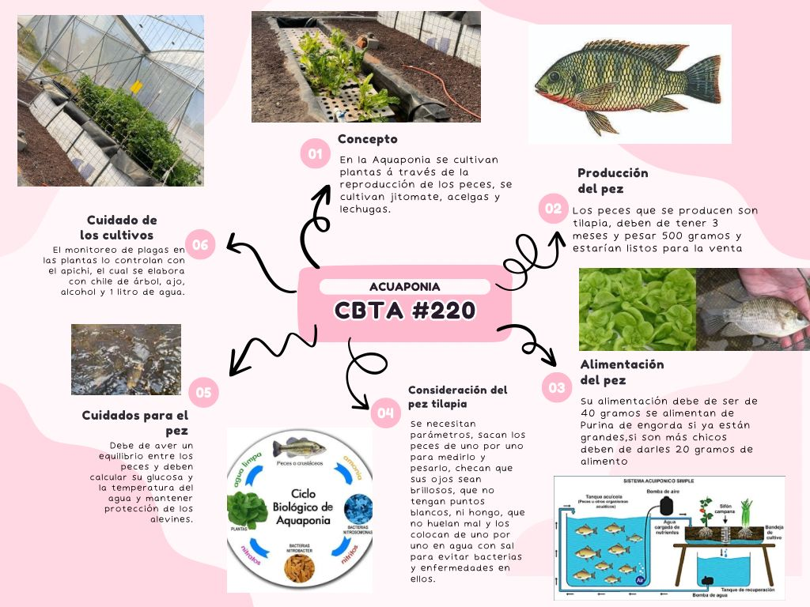

Mapa Mental

Cuadros de Informacion

Pasos de Proceso

Mapa de Ideas

Organizador

Información fundamental obtenida sobre la acuaponia.
Información sobre todo el proceso del sistema acuapónico.
Descubre cómo este sistema combina el cultivo de plantas y peces de forma sostenible, reduciendo el uso de agua y mejorando la producción de alimentos.
La acuaponia es una solución ecológica para la producción de alimentos. Aprende cómo ayuda a reducir el desperdicio y fomenta la agricultura responsable.